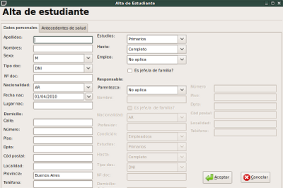
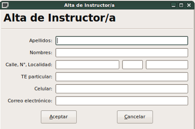
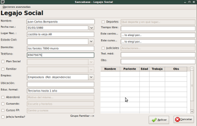
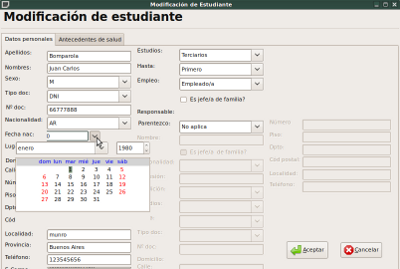
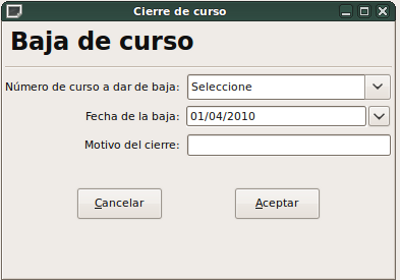

Administrador de Centros
de Formación Profesional

Menú ABM (Altas - Bajas - Modificaciones):
Consta de los siguientes ítems:
- Altas - Estudiantes:
Se abrirá una ventana con dos pestañas y allí podremos ingresar todos los datos de cada estudiante, y esos datos se guardarán en la base de datos. Los campos ingresados son los mismos que se piden en la cédula escolar, y consiste en datos filiatorios, datos del responsable y cuestiones de salud. - Altas - Cursos:
El formulario que aparecerá nos permite ingresar un curso nuevo. Se toma como referencia el nú del mismo, y posee un desplegable que contiene todo el nomenclador con los oficios, su cantidad de horas, el tipo de curso, fechas de inicio y fin, instructor responsable, centro y horarios en los que se dictará. Luego podemos asignar de entre todos los estudiantes que tenemos en nuestra base de datos, aquellos que serán parte de este curso nuevo. Conviene pues ingresar todos los alumnos, los instructores y centros y luego dar de alta un curso. Los datos ingresados serán los que reflejen las actas de examen, ficha de curso y certificados de egresados. - Altas - Instructores:
Aquí ingresaremos a los docentes, con unos pocos datos de contacto. - Altas - Coordinadores:
Ídem Alta de Instructores - Altas - Centros:
Se ingresan acá las diversas sedes de cada Centro de FP. Con sus responsables, domicilio, contacto, sitio web, etc. - Altas - Administrativos:
Ídem Alta de Instructores - Altas - Auxiliares:
Ídem Alta de Instructores - Altas - Legajo Social:
Esta feature, sugerida por los coordinadores de los centros, permite hacer un legajo de diversos datos que no están en la cédula escolar, pero que son de significativa importancia para el trabajo con estudiantes, ya que incluye su grupo familiar, sus estudios, antecedentes laborales, gustos, perspectivas, cuestiones legales, etc. Además abre una hoja en blanco para poder escribir todo lo que se desee. Para poder abrir un legajo social, ese estudiante ya tiene que estar ingresado en el sistema, no se puede tener legajo social si no se tiene el alta común. No es necesario que un estudiante tenga legajo social. Los datos no se vuelcan en las planillas, sino que se toman para información interna de cada centro. Es decir que si hay dos domicilios diferentes, por ejemplo, el que se usará en la ficha de curso, será la del alta de alumno, no la del legajo social. - Modificaciones - Estudiantes:
El sistema solicitará un apellido; mostrará entonces un diálogo con todos los que tuvieren ese apellido, para poder seleccionar el estudiante que se modificará. Allí se abrirá una ventana similar a la de alta, pero ya precargada. Se modifica lo que se desea y se actualiza inmediatamente la base de datos. - Modificaciones - Cursos:
Aquí podemos cambiar los datos del curso, y (en desarrollo) los alumnos que están en cada uno de ellos. Pero para poder hacer esta última tarea, usaremos la opción "Agregar estudiante a curso". - Modificaciones - Instructores:
Para actualizar los datos de los docentes - Modificaciones - Coordinadores:
Ídem modificación de instructores - Modificaciones - Centros:
Actualización de datos de una sede del centro - Modificaciones - Administrativos:
Ídem modificación de instructores - Modificaciones - Auxiliares:
Ídem modificación de instructores - Modificaciones - Legajo Social:
Para actualizar, renovar datos, agregar informes y hacer entrevistas a los estudiantes que tuvieren legajo social. - Modificaciones - Agregar estudiante a curso:
De manera interina, esta opción permite abrir un curso sin alumnos y luego ir agrgando a medida que se vayan anotando en el mismo. - Bajas y egresos - Fin de un curso:
Si un curso termina antes del día previsto, se deberá consignar manualmente usando esta entrada del menú - Bajas y egresos - Deserción de estudiante:
Cuando un estudiante deja un curso, se consigna en esta entrada. Pero cabe consignar que sus datos no se borrarán de la base de datos, sino que se baja del curso, simplemente. Ningún dato que se ha ingresado se borra por una baja. - Bajas y egresos - Seguimiento de egresado:
Los centros que tienen la posibilidad de sistematizar las actividades de los estudiantes, es posible consignar si los mismos consiguieron empleo, y las cualidades del mismo. - Datos del Centro:
Se ingresan en este ítem los datos del Centro de Formación Profesional, no los de la sede. Cabe aclarar que los datos aquí ingresados serán los que figurarán; en la documentación que se genere.